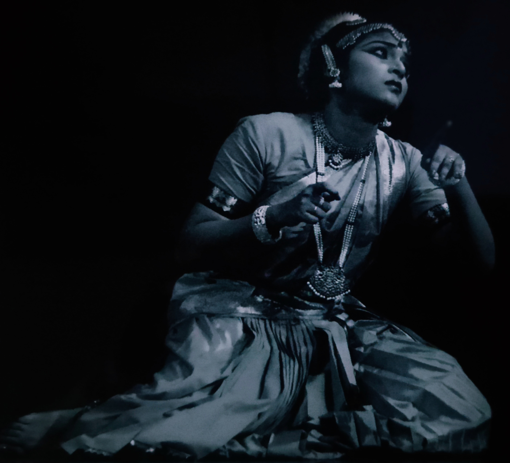

<section class="section">
  <div class="container">
    <h1>About Me</h1>
    <p>
      Hi! I am Shrija. I am a researcher, educator and artist, with a specialisation in spatio-cultural studies and performance arts. I like to learn about ecology and landscapes and how cultural systems are built around them and societies are shaped. In brief, I study, Human-Nature-Culture interface. My focus is on conservation and awareness and bridging the gap between society and ecology through art. To pursue my interests, I did my PhD in Humanities and Social Sciences after completing my Bachelors and Master’s degree in Literature and Culture Studies.
    </p>

    <p>
      I started learning Bharatanatyam when I was four years old under the Guru Shishya Parampara. The dance form intrigued me because of its complexity, logic and beauty. In a highly competitive and challenging world, Bharatanatyam has helped me stay grounded, develop a positive mindset, and be empathetic.
    </p>

    <p>
      I enjoy connecting with people and sharing ideas or working collaboratively. I am enthusiastic about conducting workshops, lectures and events, to build strong relationships and communities.
    </p>

    <p>
      Today, I teach university students and working professionals as a faculty, and independently work on my creative projects. I share my experiences on social media through audio-visual content and occasionally through a haiku!
    </p>

    <div class="gallery" aria-label="Photo gallery">
      <figure>
        
        <figcaption class="muted">Performance</figcaption>
      </figure>
      <figure>
        
        <figcaption class="muted">Portrait</figcaption>
      </figure>
    </div>
  </div>
</section>


